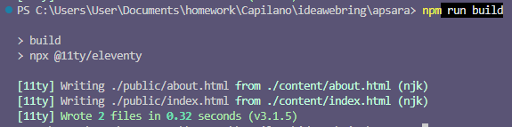

.: Welcome to my cozy forest :.
04-20-2026 (1:16 am)
I figured out how to install Eleventy and generate my pages with a template! Thank you to petrapixel's tutorial. Now my development process will be streamlined.
Previously, I would use simple PHP to include my headers and footers on every page. This required me to build all my site files in PHP. For example,
index.html would become index.php. Then, using a single line of PHP, I would essentially "tell" the page to automatically include the code I wanted.
For example, I made a file called header.php, which contained all the code that needed to be written before the contents of the page. Similarly, a page called footer.php would contain the code that is written after the contents. So all my content pages would look like this (prior to upload on server):
<? include ("/home/content/layout/header.php") ?>
Page contents (written in html)
<? include ("/home/content/layout/footer.php") ?>
This was simple enough for my 11-year-old brain. At this point I was already using paid shared hosting for my website, which supported dynamic content such as PHP. However, this method requires index.php to fetch header.php and footer.php and load them into the page every time you accessed index.php. For a small personal website, the load time wasn't much of an issue, at least not enough for me to notice.
The advantage of a static site generator (SSG) is that all the HTML for header and footer is automatically injected into my content pages before it's uploaded to the server. So when you visit index.html, load time is faster since you're no longer asking the page to fetch the header and footer code. And you don't need to use PHP, which isn't supported on platforms like GitHub Pages or Neocities.
The backend of how this all works is a bit more complicated, and requires being comfortable with writing commands into a terminal. But I'm slowly getting the hang of it, and it's a lot of fun. :)

03-04-2026
hiiiii my name is apsara. i'm an illustrator who also builds websites for fun. this site's design is a nod to the old web that i grew up in.
i want to experiment with using a static site generator (eleventy) to avoid having to update my header and footer on every single page. normally i'd use php but github pages doesn't support dynamic content. javascript is another option, but that would exclude visitors who have it turned off.
expect this page to break while I'm working lolol
you can check out my portfolio here (tap the white squirrel if you're on mobile). it's kinda broken and has a lot of placeholder images...